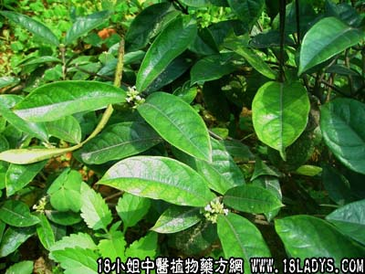

【中药概述】
巴戟天为茜草科藤本植物巴戟天的根。辛、甘，微温。归肾经。
1．补肾壮阳：用于肾虚阳痿、遗精早泄、腰膝酸软、及宫寒不孕等，可与熟地，菟丝子，补骨脂配伍；尿频遗尿，常与桑螵蛸，益智仁，菟丝子配伍。如（毓麟丸）、（<医学发明>巴戟丸）。
2．祛除风湿：用于肝肾不足的筋骨痿软、行步艰难等，常与杜仲，续断配伍；久患风湿而肝肾虚损等症，可与淫羊藿，狗脊，当归等配伍。如（<张氏医通>金刚丸）、（<圣惠方>巴戟丸）。
【药效鉴别】
巴戟天偏入肾经血分，燥性较小，能散，兼有祛风湿、除痹痛之效，可用于风湿痹痛，腰膝酸软等证。
【药理作用】
有皮质激素样作用及降血压作用。
【化学成分】
含维生素C、糖类、树脂等。
【用量用法】
本品10——15g，水煎服，或浸酒，亦可入丸、散剂。
【使用注意】
阴虚火旺者不宜。
【附】
盐制巴戟：1.阳痿早泄。2.子宫虚冷。3.小便失禁。4.白浊。
酒巴戟：增强辛温之性和活血通络之功，功偏于补肝肾，祛风湿，通经络。